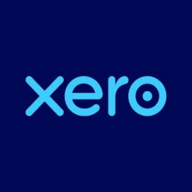
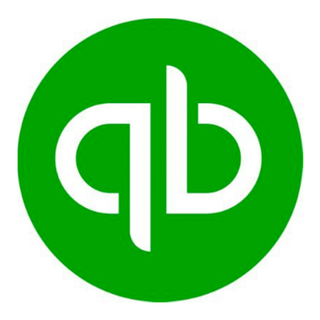

Bookkeeping, payroll and finance services
Every service is tailored to your business. We don't do "one size fits all".
You'll get a support package built around your needs and your budget; from a few hours of bookkeeping a month to a complete outsourced finance and HR function. You get back the thing every business owner wants most: your time. Here's what we can do.
Our services
Bookkeeping
Your day to day transaction recording, bank reconciliation and ledger management; handled in Xero, QuickBooks or Sage. Everything from posting invoices to managing suppliers, done. The payoff? Books that are always accurate, up to date and HMRC ready.
Finance Management
Monthly management accounts, profit and loss statements, balance sheets, and cash flow forecasts. You'll always know exactly where you stand every month, not just at year end. And that clarity is priceless, isn't it?
Payroll and HR Support
Monthly payroll processing, PAYE submissions to HMRC, year end payroll reporting, and employment compliance. We handle every detail, so your team gets paid right, on time every single pay run. No chasing, no errors, no surprise letters from HMRC.
Year End Accounts & Company Tax Returns
Statutory accounts, company tax returns (CT600), and full year end compliance, sorted. Plus director tax planning and corporation tax strategy. As you hand it over each year, you'll quickly begin to realise how good it feels to close the year with zero surprises; and keep more of what you earn.
General Finance & Admin Support
VAT returns, sales and purchase ledgers, credit control, tax planning and HMRC queries; the admin that quietly eats your week, handled. You run the business. We solve the problems.
Independent Examiner Reports & Charity Accounting
We take on a limited number of larger charity and non-profit clients on a case by case basis. An independent examination is the review many charities need instead of a full audit. We'll talk through your charity's requirements and whether we're the right fit on a discovery call.
We're systems experts
We're known as Xero Champions with deep expertise in QuickBooks, Sage, Sage 50 Payroll, Monzo for Business, and Making Tax Digital. Using something different? We can help there too.


Common questions
Do you work with sole traders?
We focus primarily on Limited companies. If you're a sole trader or partnership, we're still happy to have a conversation about your situation to see if we can help.
Can you take over from my current accountant?
Yes. We can take over from your current accountant.
Do I have to use Xero?
We specialise in Xero, but you don't have to be using it already. We'll talk through your current set up to see how our systems align.
Do we meet in person or online?
We usually meet online. If an in person meeting is needed, we can discuss that with you.
Do you do personal tax returns?
Personal tax returns are covered under a separate service. We're happy to discuss your individual circumstances.
Not sure what you need?
Every business is different. You can keep doing it the old way (the shoebox of receipts, the guesswork, the "I'll sort it at year end")… or you can talk to us and build a support plan that actually fits. Imagine closing every month knowing exactly where you stand; and having the time to actually run your business.
Email to arrange a callP.S. The discovery call is free, jargon free and pressure free. You'll leave with a clear next step; even if you never work with us.